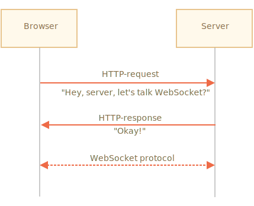

在 RFC 6455 规范中描述的 WebSocket 协议提供了一种在浏览器和服务器之间建立持久连接来交换数据的方法。数据可以作为“数据包”在两个方向上传递，而不会断开连接和其他 HTTP 请求。
对于需要连续数据交换的服务，例如网络游戏，实时交易系统等，WebSocket 尤其有用。
要打开一个 WebSocket 连接，我们需要在 url 中使用特殊的协议 ws 创建 new WebSocket：
let socket = new WebSocket("*!*ws*/!*://javascript.info");同样也有一个加密的 wss:// 协议。类似于 WebSocket 中的 HTTPS。
```smart header="始终使用 wss://"
wss:// 协议不仅是被加密的，而且更可靠。
因为 ws:// 数据不是加密的，对于任何中间人来说其数据都是可见的。并且，旧的代理服务器不了解 WebSocket，它们可能会因为看到“奇怪的” header 而中止连接。
另一方面，wss:// 是基于 TLS 的 WebSocket，类似于 HTTPS 是基于 TLS 的 HTTP），传输安全层在发送方对数据进行了加密，在接收方进行解密。因此，数据包是通过代理加密传输的。它们看不到传输的里面的内容，且会让这些数据通过。
一旦 socket 被建立，我们就应该监听 socket 上的事件。一共有 4 个事件：
- **`open`** —— 连接已建立，
- **`message`** —— 接收到数据，
- **`error`** —— WebSocket 错误，
- **`close`** —— 连接已关闭。
……如果我们想发送一些东西，那么可以使用 `socket.send(data)`。
这是一个示例：
```js run
let socket = new WebSocket("wss://javascript.info/article/websocket/demo/hello");
socket.onopen = function(e) {
alert("[open] Connection established");
alert("Sending to server");
socket.send("My name is John");
};
socket.onmessage = function(event) {
alert(`[message] Data received from server: ${event.data}`);
};
socket.onclose = function(event) {
if (event.wasClean) {
alert(`[close] Connection closed cleanly, code=${event.code} reason=${event.reason}`);
} else {
// 例如服务器进程被杀死或网络中断
// 在这种情况下，event.code 通常为 1006
alert('[close] Connection died');
}
};
socket.onerror = function(error) {
alert(`[error] ${error.message}`);
};出于演示目的，在上面的示例中，运行着一个用 Node.js 写的小型服务器 server.js。它响应为 "Hello from server, John"，然后等待 5 秒，关闭连接。
所以你看到的事件顺序为：open -> message -> close。
这就是 WebSocket，我们已经可以使用 WebSocket 通信了。很简单，不是吗？
现在让我们更深入地学习它。
当 new WebSocket(url) 被创建后，它将立即开始连接。
在连接期间，浏览器（使用 header）问服务器：“你支持 WebSocket 吗？”如果服务器回复说“我支持”，那么通信就以 WebSocket 协议继续进行，该协议根本不是 HTTP。

这是由 new WebSocket("wss://javascript.info/chat") 发出的请求的浏览器 header 示例。
GET /chat
Host: javascript.info
Origin: https://javascript.info
Connection: Upgrade
Upgrade: websocket
Sec-WebSocket-Key: Iv8io/9s+lYFgZWcXczP8Q==
Sec-WebSocket-Version: 13Origin —— 客户端页面的源，例如 https://javascript.info。WebSocket 对象是原生支持跨源的。没有特殊的 header 或其他限制。旧的服务器无法处理 WebSocket，因此不存在兼容性问题。但是 Origin header 很重要，因为它允许服务器决定是否使用 WebSocket 与该网站通信。Connection: Upgrade —— 表示客户端想要更改协议。Upgrade: websocket —— 请求的协议是 "websocket"。Sec-WebSocket-Key —— 浏览器随机生成的安全密钥。Sec-WebSocket-Version —— WebSocket 协议版本，当前为 13。我们不能使用 `XMLHttpRequest` 或 `fetch` 来进行这种 HTTP 请求，因为不允许 JavaScript 设置这些 header。如果服务器同意切换为 WebSocket 协议，服务器应该返回响应码 101：
101 Switching Protocols
Upgrade: websocket
Connection: Upgrade
Sec-WebSocket-Accept: hsBlbuDTkk24srzEOTBUlZAlC2g=这里 Sec-WebSocket-Accept 是 Sec-WebSocket-Key，是使用特殊的算法重新编码的。浏览器使用它来确保响应与请求相对应。
然后，就使用 WebSocket 协议传输数据，我们很快就会看到它的结构（"frames"）。它根本不是 HTTP。
WebSocket 可能还有其他 header，Sec-WebSocket-Extensions 和 Sec-WebSocket-Protocol，它们描述了扩展和子协议。
例如：
Sec-WebSocket-Extensions: deflate-frame 表示浏览器支持数据压缩。扩展与传输数据有关，扩展了 WebSocket 协议的功能。Sec-WebSocket-Extensions header 有浏览器自动发送，其中包含其支持的所有扩展的列表。
Sec-WebSocket-Protocol: soap, wamp 表示我们不仅要传输任何数据，还要传输 SOAP 或 WAMP（"The WebSocket Application Messaging Protocol"）协议中的数据。WebSocket 子协议已经在 IANA catalogue 中注册。
这个可选的 header 是使用 new WebSocket 的第二个参数设置的。它是子协议数组，例如，如果我们想使用 SOAP 或 WAMP：
let socket = new WebSocket("wss://javascript.info/chat", ["soap", "wamp"]);服务器应该使用同意使用的协议和扩展的列表进行响应。
例如，这个请求：
GET /chat
Host: javascript.info
Upgrade: websocket
Connection: Upgrade
Origin: https://javascript.info
Sec-WebSocket-Key: Iv8io/9s+lYFgZWcXczP8Q==
Sec-WebSocket-Version: 13
*!*
Sec-WebSocket-Extensions: deflate-frame
Sec-WebSocket-Protocol: soap, wamp
*/!*响应：
101 Switching Protocols
Upgrade: websocket
Connection: Upgrade
Sec-WebSocket-Accept: hsBlbuDTkk24srzEOTBUlZAlC2g=
*!*
Sec-WebSocket-Extensions: deflate-frame
Sec-WebSocket-Protocol: soap
*/!*在这里服务器响应 —— 它支持扩展 "deflate-frame"，并且仅支持所请求的子协议中的 SOAP。
WebSocket 通信由 "frames"（即数据片段）组成，可以从任何一方发送，并且有以下几种类型：
在浏览器里，我们仅直接使用文本或二进制 frames。
WebSocket .send() 方法可以发送文本或二进制数据。
socket.send(body) 调用允许 body 是字符串或二进制格式，包括 Blob，ArrayBuffer 等。不需要额外的设置：直接发送它们就可以了。
当我们收到数据时，文本总是以字符串形式呈现。而对于二进制数据，我们可以在 Blob 和 ArrayBuffer 格式之间进行选择。
它是由 socket.bufferType 属性设置的，默认为 "blob"，因此二进制数据通常以 Blob 对象呈现。
Blob 是高级的二进制对象，它直接与 <a>，<img> 及其他标签集成在一起，因此，默认以 Blob 格式是一个明智的选择。但是对于二进制处理，要访问单个数据字节，我们可以将其改为 "arraybuffer"：
socket.bufferType = "arraybuffer";
socket.onmessage = (event) => {
// event.data 可以是文本（如果是文本），也可以是 arraybuffer（如果是二进制数据）
};想象一下：我们的应用程序正在生成大量要发送的数据。但是用户的网速却很慢，可能是在乡下的移动设备上。
我们可以反复地调用 socket.send(data)。但是数据将会缓冲（储存）在内存中，并且只能在网速允许的情况下尽快将数据发送出去。
socket.bufferedAmount 属性储存目前已缓冲的字节数，等待通过网络发送。
我们可以检查它以查看 socket 是否真的可用于传输。
// 每 100ms 检查一次 socket
// 仅当所有现有的数据都已被发送出去时，再发送更多数据
setInterval(() => {
if (socket.bufferedAmount == 0) {
socket.send(moreData());
}
}, 100);通常，当一方想要关闭连接时（浏览器和服务器都具有相同的权限），它们会发送一个带有数字码（numeric code）和文本形式的原因的 "connection close frame"。
它的方法是：
socket.close([code], [reason]);code 是一个特殊的 WebSocket 关闭码（可选）reason 是一个描述关闭原因的字符串（可选）然后，另外一方通过 close 事件处理器获取了关闭码和关闭原因，例如：
// 关闭方：
socket.close(1000, "Work complete");
// 另一方
socket.onclose = event => {
// event.code === 1000
// event.reason === "Work complete"
// event.wasClean === true (clean close)
};最常见的数字码：
1000 —— 默认，正常关闭（如果没有指明 code 时使用它），1006 —— 没有办法手动设定这个数字码，表示连接丢失（没有 close frame）。还有其他数字码，例如：
1001 —— 一方正在离开，例如服务器正在关闭，或者浏览器离开了该页面，1009 —— 消息太大，无法处理，1011 —— 服务器上发生意外错误，完整列表请见 RFC6455, §7.4.1。
WebSocket 码有点像 HTTP 码，但它们是不同的。特别是，小于 1000 的码都是被保留的，如果我们尝试设置这样的码，将会出现错误。
// 在连接断开的情况下
socket.onclose = event => {
// event.code === 1006
// event.reason === ""
// event.wasClean === false（未关闭 frame）
};要获取连接状态，可以通过带有值的 socket.readyState 属性：
0 —— “CONNECTING”：连接还未建立，1 —— “OPEN”：通信中，2 —— “CLOSING”：连接关闭中，3 —— “CLOSED”：连接已关闭。让我们来看一个使用浏览器 WebSocket API 和 Node.js 的 WebSocket 模块 https://github.com/websockets/ws 的聊天示例。我们将主要精力放在客户端上，但是服务端也很简单。
HTML：我们需要一个 <form> 来发送消息，并且需要一个 <div> 来接收消息：
<!-- 消息表单 -->
<form name="publish">
<input type="text" name="message">
<input type="submit" value="Send">
</form>
<!-- 带有消息的 div -->
<div id="messages"></div>在 JavaScript 中，我们想要做三件事：
socket.send(message) 用于消息。div#messages 上。代码如下
let socket = new WebSocket("wss://javascript.info/article/websocket/chat/ws");
// 从表单发送消息
document.forms.publish.onsubmit = function() {
let outgoingMessage = this.message.value;
socket.send(outgoingMessage);
return false;
};
// 收到消息 —— 在 div#messages 中显示消息
socket.onmessage = function(event) {
let message = event.data;
let messageElem = document.createElement('div');
messageElem.textContent = message;
document.getElementById('messages').prepend(messageElem);
}服务端代码有点超出我们的范围。在这里，我们将使用 Node.js，但你不必这样做。其他平台也有使用 WebSocket 的方法。
服务器端的算法为：
clients = new Set() —— 一系列 socket。clients.add(socket)，并为其设置 message 事件侦听器以获取其消息。clients.delete(socket)。const ws = new require('ws');
const wss = new ws.Server({noServer: true});
const clients = new Set();
http.createServer((req, res) => {
// 在这里，我们仅处理 WebSocket 连接
// 在实际项目中，我们在这里还会有其他代码，来处理非 WebSocket 请求
wss.handleUpgrade(req, req.socket, Buffer.alloc(0), onSocketConnect);
});
function onSocketConnect(ws) {
clients.add(ws);
ws.on('message', function(message) {
message = message.slice(0, 50); // message 的最大长度为 50
for(let client of clients) {
client.send(message);
}
});
ws.on('close', function() {
clients.delete(ws);
});
}这是运行示例：
[iframe src="chat" height="100" zip]
你也可以下载它（点击 iframe 右上角的按钮）然后在本地运行。运行之前请记得安装 Node.js 和 npm install ws。
WebSocket 是一种在浏览器和服务器之间建立持久连接的现代方式。
WebSocket 的 API 很简单。
WebSocket 方法：
socket.send(data)，socket.close([code], [reason])。WebSocket 事件：
open，message，error，close。WebSocket 自身并不包含重新连接（reconnection），身份验证（authentication）和很多其他高级机制。因此，有针对于此的客户端/服务端的库，并且也可以手动实现这些功能。
有时为了将 WebSocket 集成到现有项目中，人们将主 HTTP 服务器与 WebSocket 服务器并行运行，并且它们之间共享同一个数据库。对于 WebSocket 请求使用一个通向 WebSocket 服务器的子域 wss://ws.site.com，而 https://site.com 则通向主 HTTP 服务器。
当然，其他集成方式也是可行的。